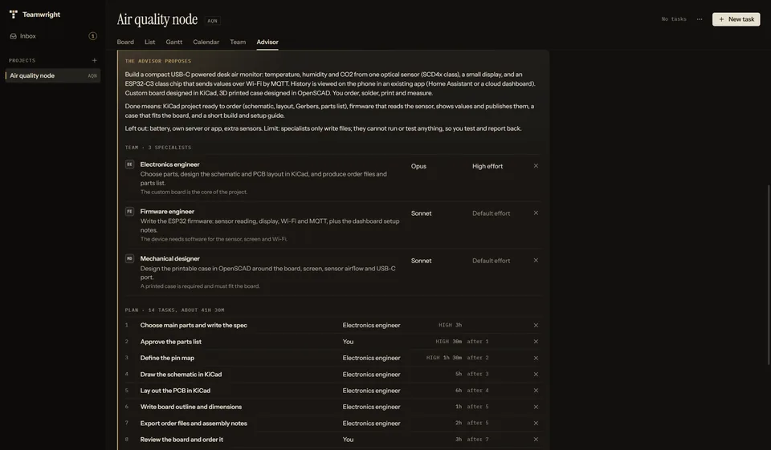
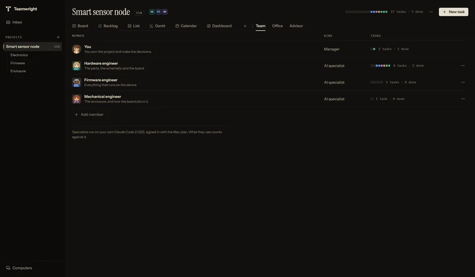
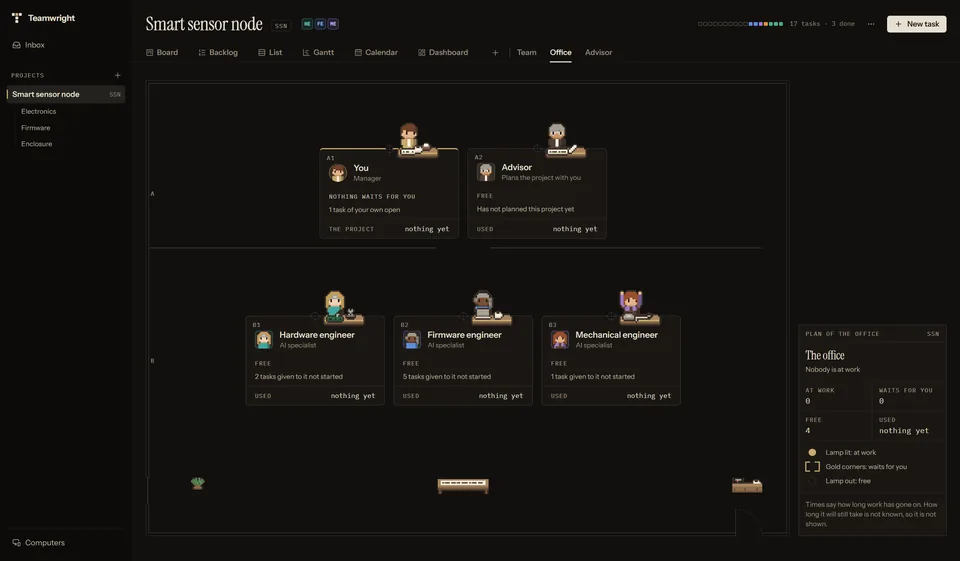
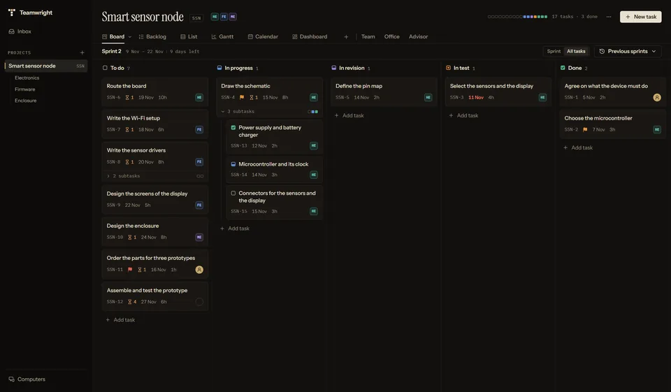
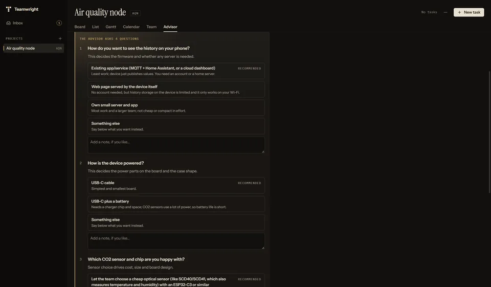
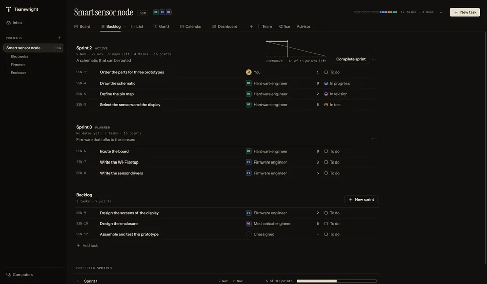

A desktop app · Open source
You manage. A right-sized team of AI specialists does the work.
The film, in eleven chapters
01 · 0 to 18.267 s The wish
A desk at night under one lamp. A person wants to build a sensor hub, and a notebook holds a pencil sketch of a small box with a screen. A board, firmware and a case are too much for one person. Then the laptop opens on Teamwright.
- I want to build a sensor hub.
- A board. Firmware. A case.
- I wish I could.
- Teamwright exists.

02 · 18.267 to 30.2 s Tell the Advisor
The real program. The Advisor hears what the manager wants and asks what it needs to know. Then it proposes a team of AI specialists and a plan of tasks, which the manager can change before approving it.
- Tell the Advisor what you want. It asks what it needs to know.
- Then it proposes a team of AI specialists, and a plan. Change it before you approve.

03 · 30.2 to 36.967 s A team on Claude Code
The team of the project: the manager and three AI specialists, each with its model and effort. Every specialist runs on the Claude Code installed on the manager's own computer, with the manager's own plan.
- Every specialist runs on your own Claude Code, on your computer, with your plan.

04 · 36.967 to 53.067 s The team at work
The specialists work on their tasks, hand their results over and write to each other. The office shows who is at work. With the coordinator switched on, ready work starts by itself, within a budget.
- They do the work. They hand results over, and write to each other.
- Watch the team at work.
- Switch the coordinator on, and ready work starts by itself. Within your budget.

05 · 53.067 to 66.9 s You stay in charge
A specialist that needs more asks the manager in the inbox, and waits for the answer. When the limit of the Claude plan is reached, the team waits and goes on after. The memory keeps what was decided.
- When a specialist needs more, it asks you.
- When the limit of your plan is reached, the team waits, and goes on after.
- What was decided is remembered.

06 · 66.9 to 83.8 s Your own team
Ready-made specialists join the team, each with its own instructions. The team is given skills and connectors, and a connector runs only as the manager confirmed it. The Advisor can start from conversations the manager already had.
- Add ready-made specialists. Give each its own instructions.
- Give them skills and connectors. A connector runs only as you confirmed it.
- The Advisor can start from conversations you already had.

07 · 83.8 to 107.667 s A full tracker
The plan lives in a tracker that starts from a template. The board of a sprint, whose lane says when it holds too much; a task with tags, a checklist and fields of its own; the table, where every field is a column; the board grouped by person or by tag.
- The plan lives in a full tracker. Start from a template.
- Your plan is a board. A lane says when it holds too much.
- A task carries tags, a checklist, and fields of your own.
- Every field is a column.
- Group the board by person, or by tag.

08 · 107.667 to 129.967 s Seeing the work
The Gantt chart sets the plan against what really happened. Then the sprints with their burndown, the dashboard, a report of the whole project, and the computers the project is kept on.
- See the plan against what really happened.
- Run it in sprints. The burndown follows the scope.
- A dashboard that is worked out, not written. And a report of the whole project.
- On every computer you own.

09 · 129.967 to 145.967 s Thirteen themes
One board crossing the thirteen themes of the program, dark and light, three of them new: Rose, Delft and Poppy.
- Thirteen themes. Three of them new.

10 · 145.967 to 166.533 s The device
A schematic draws itself in gold. The board follows, its parts land on it, a small display stands on a header, and the case comes down round it.
- Schematic. Layout.
- Board, firmware, enclosure. One plan.
- You decide. You build it.

11 · 166.533 to 183.1 s Teamwright
The desk again. A hand pushes in the USB-C cable, the device shows its readings, and the person smiles. Then the name Teamwright, where to find it, and who made it.
- You manage. Your team does the work.
- You manage. Your team does the work.
- Open source · github.com/fouad1233/teamwright
- Developed by Fouad Aladhami to accelerate project development
01
What it is
Teamwright is a desktop app for running a project the way a manager runs a team. The team members are AI specialists. You are the manager.
It is made for one person with a project bigger than one conversation: an engineer, a maker or a founder who knows what the result should be and can judge whether it is right, but cannot be the hardware designer, the firmware developer, the mechanical designer and the project manager at the same time.
An AI agent is good at a task. A project is more than a pile of tasks: its parts depend on each other, and some choices are only yours. People solved this long ago with boards, timelines, sprints and a manager who makes the calls. Teamwright gives a team of AI specialists the same structure and keeps you in the manager's chair.
Teamwright is young. It started on 11 November 2026 and is built in the open, one small commit at a time. This page says what it does today, and says plainly what is not built yet.
02
How it works
-
You say what you want
Tell the Advisor, in your own words, what you want to build. The Advisor is an AI agent that works as your chief of staff.
-
The Advisor asks, then proposes
It asks what it needs to know, with questions you can answer by a click. Then it proposes the smallest team that can do the job, with a reason, a model and an effort for each specialist, and a plan: tasks, owners, what each task waits for, and estimates.
-
You approve
Nothing is created before you approve. You can take a specialist or a task out of the proposal first. A later round adds to the team and the plan you have.
-
Specialists work on their tasks
You start a task that is given to a specialist. It gets a brief, works in the folder of the project, shows every step as it happens, and reports. You can answer it and it goes on.
-
What is yours to decide waits for you
When a choice is yours, the specialist stops and asks. The question waits in your inbox with the options and what each one leads to.

Not built yet: specialists that hand their results to each other, and a coordinator that starts a task by itself when the work it waits for is done. Today you start each task. Both are next on the roadmap.
03
What is in it today
Every project is a place to plan and follow the work, with the views a project-management tool gives a team of people.
- Board
- Tasks in the statuses of your workflow, moved by drag and drop, with subtasks behind a fold. You name, color and order the statuses yourself.
- Backlog and sprints
- Plan, fill, start and complete sprints, with story points and a burndown. A completed sprint opens with its burndown and its tasks.
- List, Gantt, calendar
- The same tasks as a table, as bars against the days with lines from each task to the tasks that wait for it, and by month. On the Gantt chart a bar is dragged to change the dates.
- Dashboard
- Where the project stands, in sentences worked out by rules: the numbers, the work by status and by member, this week, the sprint, the tokens used, and a note of your own.
- Views you add
- Add a view, name it, filter it, order the tabs, and remove it again.
- Areas
- Cut a project into the jobs inside it, such as electronics, firmware and enclosure. An area shows only its tasks, in every view.
- The office
- The team drawn as a workshop in plan: a bench and a desk for everybody, a lamp lit where work goes on, and people who work, wait with a hand raised, or walk the aisles.
- History
- Every change is written into a log of operations. The history of a task is read from it, and when another computer made a change, it names that computer.
- Syncing
- Keep two computers in step through a folder you own, such as a cloud drive. Being built: it has run with two copies of the program on one computer, not yet between two real computers.



04
What it runs on
Teamwright runs on your own Claude Code, on your own computer.
It does not ship a model and does not ask for a password. It starts the Claude Code that is already installed on your computer, and that you signed in to yourself, and talks to it through its documented headless mode. Every specialist is a session of its own. It can read and write files in the folder of its project, read the folders you give it for reference, and nothing else.
Your data stays in a file on your disk: a local database. What the specialists make is ordinary files in the folder of the project. There is no account, no server and no telemetry. The tokens every turn uses are counted and shown, and a specialist with nothing to do is not running.
The program has been run on Windows. The build server builds and tests its code on Windows and on Linux. macOS is not among the systems it is checked on yet.
05
Open source
Teamwright is free and open source, under the Apache License 2.0. The code, the design, every decision and the story of how it was made are in the repository.
06
Get it and build it
Installers for Windows, macOS and Linux are on the releases page. They are not signed yet, and Teamwright is pre-alpha. You can also build it from its source code.
To look around first, try the demo: the interface in your browser, on a sample project, made for a computer's screen. Nothing is saved there, and no AI runs: the specialists only play their work.
To build it, you need:
- Rust
- Stable.
rustupreads the version from the repository. - A C compiler
- On Windows the Microsoft C++ Build Tools, or a setup without administrator rights.
- Node.js
- 22 or later.
- WebView2
- Windows only, and part of Windows 11. On Linux and macOS the prerequisites of Tauri apply.
- Claude Code
- Installed and signed in, for the Advisor and the specialists. Projects, tasks and every view work without it.
Then, in a terminal:
git clone https://github.com/fouad1233/teamwright.git
cd teamwright
npm install
npm run appnpm run app builds and opens the desktop app. To build it once, without opening it:
npm run tauri --workspace @teamwright/desktop -- build --debug --no-bundleOn Windows that gives target/debug/teamwright-desktop.exe. To see only the interface in a browser, on made-up data and without Rust, run npm run dev and open http://localhost:1420.
The development guide has the details, the checks and the tests.
07
Contribute
Issues and ideas are welcome now. The project is young and its foundations still move, so before a large change, open an issue and say what you want to do.
The contributing guide explains how the code is organized and the standards it follows: small commits, code that explains itself, documents that move with the code, and a written record of every lasting decision. It applies to people and to AI agents alike.
08
Questions
Is Teamwright free?
Yes. It is open source under the Apache License 2.0. The work of the Advisor and the specialists runs on your own Claude Code and uses your own plan there.
Can I download it?
Yes. Installers for Windows, macOS and Linux are on the releases page of the repository. They are not signed yet, so Windows and macOS warn before they open, and Teamwright is pre-alpha. You can also build it from the source code with Rust and Node.js, as the section above shows.
Do I need Claude Code?
For the Advisor and the specialists, yes: installed on your computer and signed in by you. Projects, tasks and every view work without it.
Where is my data?
In a database file on your own disk. What the specialists make is files in the folder of the project. There is no account, no server and no telemetry.
What can a specialist touch?
It reads and writes files in the folder of its project and reads the folders and files you give it for reference. It cannot reach anything else. When a choice is yours, it stops and asks.
Do the specialists work together on their own?
Not yet. Today each specialist works on the task you start for it. Handing results to each other, and a coordinator that starts tasks when the work they wait for is done, are the next steps on the roadmap.
Which systems does it run on?
It has been run on Windows. Its code is built and tested on Windows and Linux. macOS is not among the systems it is checked on yet.
Did Teamwright make the device in the film?
No. The interface in the film is the real program on a sample project, and the plan in it was proposed by a real Advisor. The board, the parts and the case are modelled for the film. The film shows what Teamwright is for, not a record of a finished device.